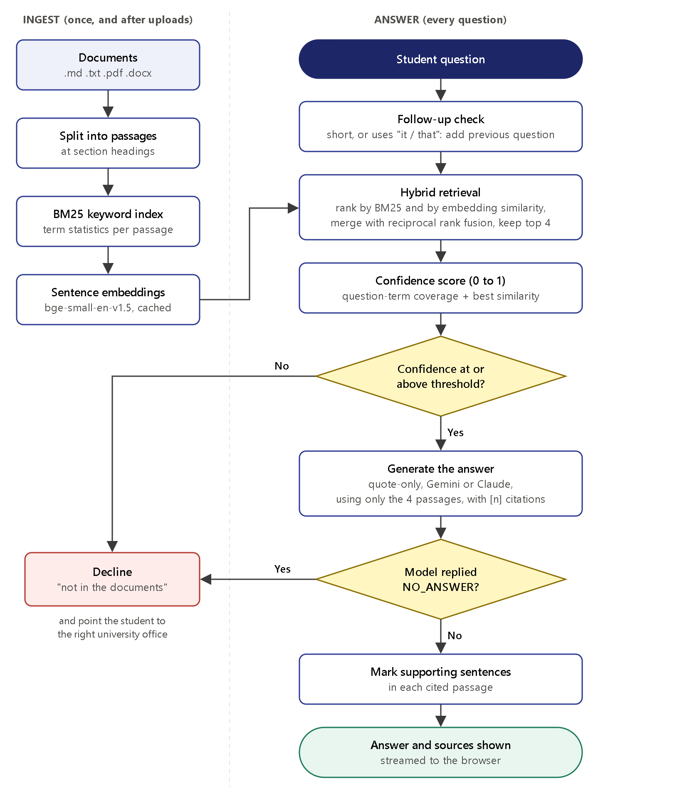

RAG explained simply
A beginner's guide to how the AI Student Assistance Chatbot works. No earlier knowledge needed. Read it top to bottom once (about 25 minutes), then use the last two sections to prepare for questions.
1. The project in 30 seconds
2. The problem RAG solves
A language model (an "LLM", like ChatGPT, Gemini or Claude) is a program that has read a huge amount of text and learned to write sentences. It is very good at language, but it has three weaknesses for a university help desk:
| Weakness | What goes wrong |
|---|---|
| It does not know our university | It was never shown our attendance rule or our fee notice, so it cannot know them. |
| It can "hallucinate" | When it does not know, it may still write a confident, wrong answer ("the fine is Rs. 500") that sounds real. |
| Its knowledge is frozen | A notice published last week is not in its memory. |
A wrong answer about a fee or an exam date can cost a student money or marks. So we need answers that come from the official documents, and that can be checked.
3. What RAG means
That is the whole idea. Everything else in this project is detail about doing each of these three steps well.
4. The big picture
The system works in two parts:
- Part 1, preparing the documents ("ingestion"). Done once when the server starts, and again whenever a document is uploaded or deleted.
- Part 2, answering. Done for every question a student asks.

Flowchart from the project report. Left side: preparing the documents. Right side: answering a question. (The project now also has a fourth way to write the answer, a locally trained model, explained in step 7.)
5. Part 1: Preparing the documents
Step 1. Load the documents app/ingest.py
The knowledge base is a folder of files: data/corpus/ holds 36 documents in five categories
(syllabus, regulations, notices, FAQs, policies), and data/uploads/ holds files added through the
website. The program can read .md, .txt, .pdf and .docx files.
The 36 documents come in two groups:
- 18 sample documents for a made-up university, "Sutlej Valley University" (SVU). They were written for the project so it could be built and tested without confidential documents. The 130 test questions were written for these.
- 18 official documents written from public pages: 11 on LPU (attendance and exams, conduct, academic calendar, B.Tech CSE structure, admissions, fees and scholarships, hostel, placements, labs and events) taken from lpu.in and LPU's Prospectus 2026, and 7 CSE syllabi (Operating Systems, Computer Networks, Computer Organization, Algorithms, Theory of Computation, Compiler Design, Software Engineering) from AICTE's official model curriculum, because LPU does not publish its own syllabi. Each document lists the exact web pages it came from.
origin: official in its header, so the website labels it
"Official source" instead of "Sample". When a question names a university ("attendance at LPU", "fee at SVU"), only that
university's documents are searched (Engine.institution_filter). A quoted answer never mixes sentences from the two
universities.Step 2. Chunking: cut documents into passages app/ingest.py
A whole document is too big to be a useful search result. If we handed a 2,000-word regulation to the writer, the answer would be buried in it and the "source" would be vague. So each document is cut into small pieces called chunks or passages.
- Our rule: one section (the text under one heading) = one chunk. This keeps each chunk about one topic.
- If a section is longer than 220 words, it is cut into windows of 160 words that overlap by 40 words. The overlap makes sure a sentence lying on a boundary is complete in at least one of the two windows.
- Result: 36 documents become 313 passages. Each has an id such as
REG-01#3(document id + number).
Step 3. Indexing: make the passages searchable app/retrieval.py
An index is a structure prepared in advance so that searching is fast, like the index at the back of a book. We build two indexes, because there are two different ways to search.
Good at: exact words, codes and numbers ("CSE-204"). Weak at: different words with the same meaning.
BAAI/bge-small-en-v1.5) turns each passage into a list of
384 numbers called an embedding or vector. Think of it as coordinates on a map of meaning: texts that mean
similar things land close together, even when they share no words. "Recheck my paper" lands near "re-evaluation of answer script".
Good at: paraphrases and casual wording. Weak at: exact codes and numbers.
To compare two vectors we use cosine similarity: a number near 1 means "same meaning", near 0 means "unrelated".
The passage vectors are computed once and saved in data/index/, so the server starts quickly next time.
6. Part 2: Answering a question
All of this is coordinated by one function: Engine.answer_stream() in app/pipeline.py.
If you learn one function for the presentation, learn this one.
Step 4. Prepare the question app/pipeline.py app/hinglish.py
- Greetings. "hi" or "thanks" gets a welcome message; nothing is searched.
- Follow-up questions. "and for the hostel?" means nothing alone. A very short question, or one with words like
"it / that / also", is searched together with the previous question (
contextualise()). - Hindi-English ("Hinglish"). Students type "fees ki last date kab hai". The documents are in English, so a word list rewrites it into rough English for searching: "fees last date when". It is a dictionary of common words, not a full translator.
Step 5. Retrieval: find the best passages app/retrieval.py
This is the R of RAG, done by Index.search().
- Score every passage by keywords (BM25).
- Score every passage by meaning (cosine similarity between the question's vector and each passage's vector).
- Combine the two rankings. This is called hybrid search. The top 20 from each list are merged with Reciprocal Rank Fusion (RRF).
- Keep the best 4 passages (
TOP_K = 4).
1 / (60 + rank) from each list, and the two are added.
| Passage | Keyword rank | Meaning rank | Fused score |
|---|---|---|---|
| A | 1st | 3rd | 1/61 + 1/63 = 0.0323 (winner) |
| B | 2nd | not in top 20 | 1/62 = 0.0161 |
| C | 9th | 1st | 1/69 + 1/61 = 0.0309 |
Why hybrid? Keyword search and meaning search fail on different questions, so together they cover each other. Our tests confirm it (see section 9).
Optional extra: a reranker (a "cross-encoder" model) can re-read the top 10 candidates together with the question and re-order them. It ranks slightly better but adds about 1.6 seconds per question and did not make the final answers more correct, so it is switched off by default.
Step 6. The confidence gate: should we answer at all? app/retrieval.py
Search always returns something, even for "Who won the cricket world cup?". So before answering we compute a
confidence score from 0 to 1 (Index.confidence()), the average of two signals:
- Coverage: what share of the question's important words actually appear in the retrieved passages?
- Similarity: how close in meaning is the best passage to the question?
If the score is below the threshold (0.45), the chatbot declines: "I could not find this in the university documents I have, so I will not guess." Declining is called abstaining. The threshold was not guessed: it was chosen by testing many values on labelled questions (section 9).
Step 7. Generation: write the answer app/generate.py
This is the G of RAG. The project has four interchangeable "generators". All of them receive the same
input (question + the retrieved passages) and must return an answer with citations like [1].
| Generator | How it writes | Good and bad |
|---|---|---|
| Quote the documents ("extractive") | No AI writing. It scores every sentence of the passages against the question and quotes the best one to three sentences. | Cannot invent anything, works offline, fast. Answers are less smooth. |
| Local model | A small model (FLAN-T5) that we fine-tune on about 1,000 question/passage/answer examples made from our own documents. Runs on the laptop's CPU. | No internet or API key, data stays on the computer.
Must be trained first (train_local_model.bat). |
| Gemini | Google's model, called over the internet. | Fluent, natural answers. Needs an API key and internet. |
| Claude | Anthropic's model, called over the internet. |
The prompt is the instruction text sent to the language model. Ours (SYSTEM_PROMPT and
build_messages()) looks like this in short:
You are the student help desk assistant. Use ONLY the passages below.
Cite the passage after each claim as [1], [2].
Quote numbers, dates and amounts exactly.
If the passages do not contain the answer, reply exactly NO_ANSWER.
Passages:
[1] Attendance Regulations > Minimum attendance requirement
...text of the passage...
[2] ...
Student's question: What is the minimum attendance required?
The passages placed inside the prompt are the "augmented" part of RAG. Three safety nets follow:
- If the model replies
NO_ANSWER, the student sees the polite decline message. - If the model fails (no internet, bad key), the chatbot automatically falls back to quoting the documents.
- The local model's answer is rejected if it contains a number that is not in the passages (a made-up fee or date).
Step 8. Citations and highlighting app/pipeline.py app/generate.py
The answer is returned with its sources: document title, section and text of each passage. The exact sentences that support the answer are marked, and the website highlights them. So the student can verify every answer in seconds.
How the answer reaches the screen app/main.py web/live.js
The browser sends the question to the server address POST /api/chat. The server replies as a stream:
small JSON messages, one per line, sent as soon as each is ready:
{"type": "meta", ...the passages that were found...}
{"type": "token", "text": "You need at least 75% "}
{"type": "token", "text": "attendance in each course. [1]"}
{"type": "done", ...final answer, sources, confidence, time taken...}
That is why the passages appear first and the answer then "types itself" on screen, instead of a long blank wait.
7. One question, start to finish
| Stage | What happens for "What is the minimum attendance required?" |
|---|---|
| Browser | ask() in web/live.js sends the question to POST /api/chat. |
| API | chat() in app/main.py checks the rate limit and calls the engine. |
| Prepare | Not a greeting, not a follow-up, not Hinglish. The question is used as it is. |
| Retrieve | BM25 finds passages containing "minimum", "attendance", "required". Embeddings find passages about attendance rules. Fusion puts the attendance section of document LPU-REG-01 (LPU Attendance, Examination and Grading Rules) first. |
| Gate | The question's words are well covered and the meaning is close, so confidence is above 0.45. Go ahead. |
| Generate | The sentences stating LPU's rule (80%, or 75% after a 5% medical relaxation) are picked (or written by the model) and tagged with [1]. |
| Cite | Source 1 = LPU Attendance, Examination and Grading Rules; the rule is highlighted. |
| Browser | The answer appears with a clickable [1] that shows the passage. |
And for "What is the capital of France?": retrieval finds nothing related (confidence 0), the gate stops it, and the student is told the documents do not cover this.
8. Which file does what
Every function in the code now has a comment explaining it. This table tells you where to look.
| File | Its job | Functions worth knowing |
|---|---|---|
app/main.py | The web server (FastAPI). Receives requests from the browser. | chat, upload, documents, health |
app/pipeline.py | The RAG pipeline, start to finish. The heart of the project. | Engine.answer_stream, contextualise, retrieve |
app/ingest.py | Reads files and cuts them into chunks. | load_all_documents, chunk_document, _windows |
app/retrieval.py | Searching: BM25, embeddings, fusion, confidence. | BM25.scores, Index.search, Index.confidence |
app/generate.py | Writing the answer: quoting, Gemini, Claude; the prompt. | extractive_answer, build_messages, SYSTEM_PROMPT |
app/local_model.py | Runs the locally trained model. | local_stream, unsupported_numbers |
app/hinglish.py | Rewrites Hindi-English questions for searching. | to_search_english |
app/textutil.py | Text helpers: splitting into words and sentences. | tokenize, split_blocks |
app/security.py | Rate limiting and security headers. | RateLimiter.check |
app/evaluate.py | Measures accuracy on labelled questions. | evaluate_retrieval, tune_threshold, evaluate_answers |
app/config.py | All settings in one place (chunk size, top-k, threshold, model names). | |
training/ | Builds training data, fine-tunes and tests the local model. | data.build, train.main |
web/ | The website: HTML pages, and live.js which connects them to the server. | ask, streamChat, botNode |
tests/ | Automatic checks that the pipeline still works. | |
data/ | The documents, the saved vectors, the test questions and results. |
9. How we know it works (evaluation)
We wrote 130 test questions with known correct answers: 98 answerable from the documents and 32 "out of scope"
questions the chatbot should refuse. They are written in four styles: direct, reworded (paraphrase), casual, and Hindi-English.
The command python -m app.evaluate runs them all and saves the scores.
Measuring the search
- Hit@3: in what share of questions is the correct passage among the top 3 results?
- MRR (mean reciprocal rank): rewards putting the correct passage higher (1st = 1, 2nd = 0.5, 3rd = 0.33 ...).
| Search method | Hit@1 | Hit@3 | MRR | Time per question |
|---|---|---|---|---|
| BM25 (keywords only) | 68.4% | 89.8% | 0.795 | 15 ms |
| Dense (meaning only) | 75.5% | 89.8% | 0.830 | 12 ms |
| Hybrid (used by the chatbot) | 77.6% | 93.9% | 0.855 | 12 ms |
| Hybrid + reranker (optional) | 84.7% | 95.9% | 0.907 | 831 ms |
This table is the evidence for the design: hybrid beats either method alone, and the reranker's small gain costs about 70 times more time.
Measuring the answers (quoting the documents)
| Measure | Result |
|---|---|
| Answerable questions answered with every key fact | 73.5% |
| Key facts present in the answers that were given | 78.1% |
| Answers that cite the correct document | 85.1% |
| Out-of-scope questions correctly declined | 31.3% |
| Correct overall (all 130 questions) | 63.1% |
| Typical time per answer | about 0.4 seconds |
By question style: direct 95.5%, reworded 69.2%, casual 70.0%, Hindi-English 60.0%.
Numbers from the run of 26 Nov 2026 (36 documents, 313 passages) in data/eval/results.json.
They change if the evaluation is run again; the live figures are on the website's admin page.
Choosing the threshold fairly
The questions are split into two halves. The threshold is chosen on the dev half and then scored on the test half, which played no part in choosing it. This avoids fooling ourselves, the same reason a teacher does not set the exam from the exact practice paper.
- Only about a third (31%) of out-of-scope questions are declined; the confidence gate is the part most in need of improvement. "Who won the cricket world cup?" is declined, but only just (confidence 0.44 against 0.45).
- When the gate lets a question through, the answer can be wrong. Example: "How much do I pay to get my paper rechecked?" (confidence 0.49) is answered with the Rs 10,000 admission registration fee instead of the re-evaluation fee.
- A general question that does not name a university can be answered from either university's documents.
- The 130 test questions cover only the made-up university; the LPU documents are not measured yet. LPU publishes some rules (grading, marks split) only on its student blog, so those parts of the LPU documents are marked as such.
- Reworded (69%) and Hindi-English (60%) questions are still the weakest styles. The Hindi-English rewrite is only a word list.
- The marking is strict: an answer missing one key fact counts as wrong.
10. Technologies used
| Technology | Used for |
|---|---|
| Python | The whole backend. |
| FastAPI + Uvicorn | The web server and its API (/api/chat, /api/documents ...). |
| Pydantic | Checking that incoming requests have the right shape and size. |
| NumPy | Fast maths on the vectors (similarity = one matrix multiplication). |
| FastEmbed (ONNX) | Running the embedding model and the reranker on a normal CPU. |
| BM25 | Keyword search, written by hand in retrieval.py (about 30 lines). |
| pypdf, python-docx | Reading PDF and Word files. |
| PyTorch + Transformers | Training and running the local FLAN-T5 model (optional). |
| Gemini API, Claude API | Optional cloud language models for writing the answer. |
| HTML, Tailwind CSS, plain JavaScript | The website. No framework and no build step. |
| pytest | Automatic tests. |
| Vercel + Render | Hosting: the website on Vercel, which forwards /api requests to the Python backend on Render. |
11. Glossary
| Word | Meaning in plain English |
|---|---|
| LLM | Large Language Model: an AI program that writes text (Gemini, Claude, ChatGPT). |
| RAG | Retrieval-Augmented Generation: search first, then write the answer from what was found. |
| Corpus / knowledge base | The collection of documents the chatbot may answer from. |
| Ingestion | Reading the documents and preparing them for search. |
| Chunk / passage | A small piece of a document (here: one section). |
| Token | A word or word-piece. Models read and write text as tokens. |
| Stopwords | Very common words ("the", "is") that are ignored when searching. |
| Embedding / vector | A list of numbers that represents the meaning of a text. |
| Cosine similarity | A score for how alike two vectors are (1 = same meaning). |
| BM25 | The classic keyword-matching formula; rare words count more. |
| IDF | "Inverse document frequency": the rarer a word, the higher its weight. |
| Dense retrieval | Searching by meaning using embeddings. |
| Hybrid search | Using keyword search and meaning search together. |
| RRF | Reciprocal Rank Fusion: a simple way to merge two ranked lists. |
| Top-k | How many passages are kept (k = 4 here). |
| Reranker / cross-encoder | A slower, more accurate model that re-orders the top results. |
| Prompt / system prompt | The instructions and text given to the language model. |
| Grounding | Making the answer rest on given documents, not on the model's memory. |
| Hallucination | A confident answer that the model simply made up. |
| Abstain / decline | Refusing to answer when the documents do not cover the question. |
| Threshold | The minimum confidence needed to answer (0.45). |
| Extractive vs generative | Extractive copies sentences from the documents; generative writes new sentences. |
| Fine-tuning | Teaching an existing model a specific task with your own examples. |
| Citation | The [1] marker that points to the source passage. |
| Streaming | Sending the answer piece by piece as it is produced. |
| API / endpoint | An address on the server that the browser calls, e.g. /api/chat. |
| Rate limiting | Allowing each visitor only a certain number of requests per minute. |
| Hit@k, MRR | Scores for search quality (see section 9). |
| Dev / test split | Tune on one half of the questions, report on the other half. |
12. Likely questions and answers
Click a question to see a short answer you can give in your own words.
What is RAG, in one sentence?
Retrieval-Augmented Generation: the system first retrieves relevant passages from a document collection, then generates the answer using only those passages, so the answer is grounded and can be cited.
Why not just use ChatGPT or Gemini directly?
It does not know our university's rules, it can hallucinate fees and dates, and its knowledge is not updated when a new notice comes. RAG gives it the official text at question time and makes every answer checkable.
Why not train (fine-tune) a model on the documents instead of RAG?
Training is slow and costly and has to be repeated whenever a document changes, and the model still cannot show its source. With RAG, updating knowledge is just uploading a file: the index is rebuilt in seconds.
What is chunking and how do you chunk?
Cutting documents into small passages so that search returns a
focused piece. We cut at section headings; a section over 220 words is cut into 160-word windows with a 40-word overlap so no
sentence is lost at a boundary. Code: chunk_document() in app/ingest.py.
What is an embedding?
A list of numbers (384 here) that represents the meaning of a text. Similar
meanings give similar numbers, so we can find passages that mean the same as the question even when the words differ.
We use the open model bge-small-en-v1.5, which runs on a normal CPU.
What is BM25?
A keyword-ranking formula. A passage scores higher when it contains the question's words,
more so for rare words, with a correction so long passages do not win unfairly. Code: class BM25 in app/retrieval.py.
Why hybrid search? Why not only embeddings?
Keywords are best for exact terms, codes and numbers; embeddings are best for reworded and casual questions. Each fails where the other succeeds. In our test, the correct passage was in the top 3 for 93.9% of questions with hybrid, against 89.8% for keywords only and 89.8% for embeddings only.
How are the two results combined?
With Reciprocal Rank Fusion: each passage gets 1/(60 + rank) from each list and the values are added. It only uses ranks, so the two different score scales never need to be compared.
Which vector database do you use?
None. There are only 313 passages, so the vectors are kept in a NumPy array in memory and saved to a file. Comparing a question with all of them is one matrix multiplication. A vector database would be the next step for a much larger corpus.
How do you stop hallucination?
Four ways: (1) the prompt tells the model to use only the passages and reply NO_ANSWER otherwise; (2) a confidence gate declines before generating when the passages do not cover the question; (3) the default "quote the documents" mode copies sentences and cannot invent; (4) every answer shows its source passage with the supporting sentence highlighted.
How does it know when not to answer?
It computes a confidence score from two signals: how many of the question's important words appear in the retrieved passages, and how similar the best passage is in meaning. Below the threshold of 0.45 it declines. The threshold was chosen on the dev half of the labelled questions.
What is the "extractive" generator?
It does not use a language model. It splits the retrieved passages
into sentences, scores each against the question (25% keyword overlap, 75% meaning similarity, plus a small bonus for
higher-ranked passages) and quotes the best one to three. Code: extractive_answer().
What is the local model?
FLAN-T5, a small open model from Google, fine-tuned on about 1,000 examples
built from our own documents, including examples where the right reply is NO_ANSWER. It runs on the laptop with no internet.
It has to be trained once with train_local_model.bat before it appears as available.
How are follow-up questions handled?
If a question is very short or uses words like "it", "that",
"also", it is searched together with the previous question. Code: Engine.contextualise().
How do you handle Hindi-English questions?
A word list replaces common Hindi words with English ("kab" to "when", "chutti" to "leave") and drops grammar words before searching. It helps: this style now scores 60%, but it is still among the weakest.
How did you test the system?
With 130 labelled questions (98 answerable, 32 out of scope) in four
wording styles. We measure search with Hit@k and MRR, and answers by whether every key fact is present, or whether
out-of-scope questions are declined. There are also automatic tests in tests/test_pipeline.py.
What is the accuracy?
Search: the right passage is in the top 3 for 93.9% of answerable questions. Answers in quote mode: 73.5% of answerable questions contain every key fact, and 63.1% of all 130 questions are handled correctly. Direct questions reach 95.5%; Hindi-English ones 60%. (Before the LPU documents were added it was 64.6%; the test questions were written for the sample university.)
What are the limitations and future work?
Hindi-English understanding, a stronger "should I answer?" check, scanned PDFs (they need OCR), a larger real corpus with a vector database, user login, and remembering more of the conversation.
What happens when a new document is uploaded?
The file is validated (type, size under 10 MB), saved in
data/uploads/, and engine.rebuild() re-reads all documents, re-chunks them and rebuilds both indexes.
The chatbot can answer from the new file immediately.
What is the architecture / flow of a request?
Browser (HTML + JavaScript) → FastAPI server
(app/main.py) → RAG engine (app/pipeline.py) → retrieval (retrieval.py) → generation
(generate.py) → the answer is streamed back to the browser with its sources.
What security measures are there?
Rate limits per visitor (20 chat requests per minute), input size limits, upload checks on file type and size, safe file names, security headers for the browser, and server text is always inserted as plain text so it cannot run as code. There is no login in this version.
Where is chat history stored?
In the browser's own storage (localStorage) on the student's device. The server keeps no conversations; it only saves the thumbs-up/down feedback.
13. How to run and demo it
- Double-click
run.batin the project folder. The first run installs what it needs; then the site opens athttp://127.0.0.1:8000. - Open the chat page and ask: "What is the minimum attendance required at LPU?" Point at the answer, the [1] citation, the highlighted sentence and the "Official source" label.
- Ask a CSE question: "What topics are covered in the Operating Systems syllabus?" (answered from the AICTE syllabus).
- Ask about the made-up university by name: "What is the fee for re-evaluation of an answer script at SVU?" (shows that naming a university searches only its documents).
- Ask a reworded question: "Till when can I pay the semester fee without a fine?" The notice says "last date ... without any late fee", so this shows search by meaning, not only by matching words.
- Ask a follow-up: first "What is the fee for re-evaluation of an answer script?", then just "and the deadline?"
- Ask a Hindi-English question: "hostel ka gate raat ko kitne baje band hota hai".
- Ask something out of scope: "What is the capital of France?" (shows it declining).
- Open the documents page and upload a small text file, then ask a question about it (shows the knowledge base updating).
- Show the evaluation numbers (answer accuracy, retrieval Hit@3) on the admin page.
All of these were checked on this project and behave as described, using the "Quote the documents" mode.
Useful commands (run in the project folder):
.venv\Scripts\python -m uvicorn app.main:app --port 8000 start the server .venv\Scripts\python -m pytest -q run the automatic tests .venv\Scripts\python -m app.evaluate run the evaluation again
Guide for the AI Student Assistance Chatbot project. Figures and settings were taken from the code and
data/eval/results.json at the time of writing.